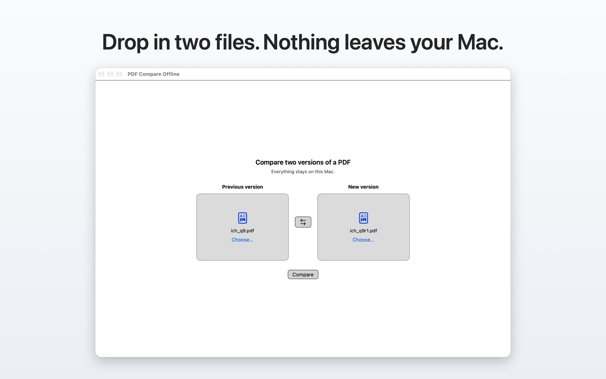
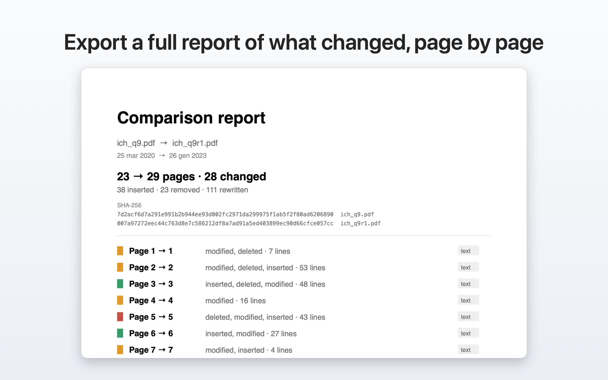

Guide
From two files to the answer
Everything the app does, in the order you meet it.
Load the two versions
Drag both PDFs onto the window, or use File then Open. Older on the left, newer on the right — the app reads the file dates and suggests the order it thinks is right.

Read the summary
One line tells you the shape of the revision: how many pages gained text, lost text, were rewritten, were inserted outright. Start here instead of scrolling — on a long document it says in one screen whether the revision touched three paragraphs or the whole annex.

Look at a change side by side
Select a page to see both versions next to each other, added text in green and removed text in red. This is the view for changes you need to read and quote.

Overlay, for layout and scans
The overlay stacks the two versions so you see what moved rather than what was reworded — the right view for scanned pages, forms, tables and diagrams. Crooked scans are aligned automatically first.

Ignore what changes on every page
Headers, footers, revision numbers and date stamps change on every single page and otherwise flood the result. Mark those regions once and they drop out of the comparison.
Export the report
Save the comparison as a document to attach to a change control record, send to a reviewer, or keep as evidence of what was checked. Reports never carry a watermark. Documents up to 20 pages export in full on the free version; above 20 pages the free report stops at the fifth changed page and says where it stopped.

If something looks wrong
A page reported as entirely changed usually means one of three things: it was re-scanned or re-exported by a different tool, the page size changed between versions, or it has no text layer and is being compared visually. The overlay normally shows which. If it doesn't, write to me — that is useful for me to know.